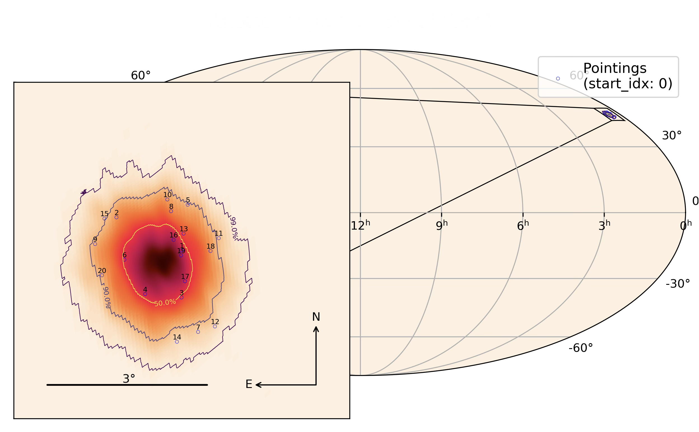
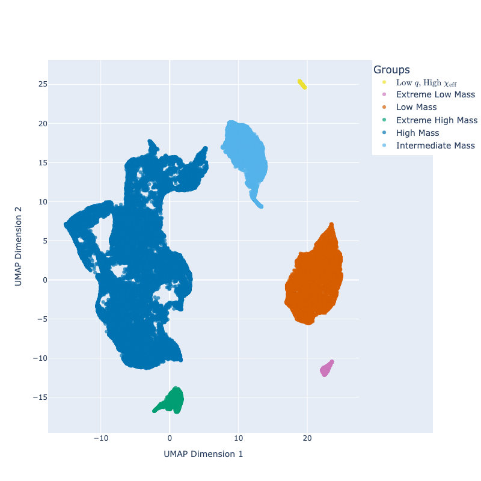

Exploring the transient universe through
gravitational waves and multi-messenger astronomy.
Rapid follow-up campaigns for gravitational wave events and other transients to identify electromagnetic counterparts.

Some publications that I have contributed to include:
📝 Kilonova Constraints for the LIGO/Virgo/KAGRA Neutron Star Merger Candidate S250206dm: GW-MMADS Observations 📝 LIGO/Virgo/KAGRA neutron star merger candidate S250206dm: Zwicky Transient Facility observations 📝 AT2025ulz and S250818k: Investigating early time observations of a subsolar mass gravitational-wave binary neutron star merger candidate 📝 AT2025ulz and S250818k: Leveraging DESI spectroscopy in the hunt for a kilonova associated with a sub-solar mass gravitational wave candidate 📝 EP250827b/SN 2025wkm: An X-ray Flash-Supernova Powered by a Central Engine and Circumstellar InteractionWe also publish some rapid updates about observations as GCN Circulars.
Understanding the population properties of gravitational wave sources through comprehensive catalog analysis.

Some publications that I have contributed to include:
📝 Data-Driven Trends and Subpopulations in the Gravitational Wave Binary Black Hole Merger Population with UMAPI am a Master's student at Ludwig-Maximilians-Universität München pursuing the AI in Physics Master program, currently working on my Master's thesis research at the Carnegie Mellon University in Pittsburgh, supervised by Prof. Antonella Palmese.
During my Bachelor's studies and the following years thereafter, I was involved with optical follow-up of gravitational wave events and other transients as part of a group led by Prof. Daniel Grün at USM/LMU.
I am a generally curious and highly motivated individual interested in a broad range of astrophysical topics. Particularly, I am passionate about applying modern data science and machine learning techniques to astrophysical problems.
Additionally to my involvement in the GJO I enjoy running, hiking, paragliding and most outdoor activities. I am interested in both photography and videography, often combining these hobbies with my outdoor adventures and the GJO's activities. For the latter I have edited several videos of our >2h concerts, including a feature-film length movie about our 2018 concert tour in South Africa.
Feel free to reach out!
julius.gassert@campus.lmu.de